Lab 2 - Spatial Data#
Th. 10.10.2024 15:00-17:00
1 - Troubleshooting#
1.1 - Google Colab: Alternative Choices of Using Jupyter Notebook#
Google Colab can serve as the first backup plan in case conda on both your local and lab computers are not working.
You can go to Colab from here.
To check third-party packages that have already been installed in Colab, execute the following command with pip (rather than conda). Make sure to start with an exclamation mark ! to tell Jupyter Notebook to run the command as a shell command (rather than as Python codes).
!pip list
You may also see Pandas from the list.
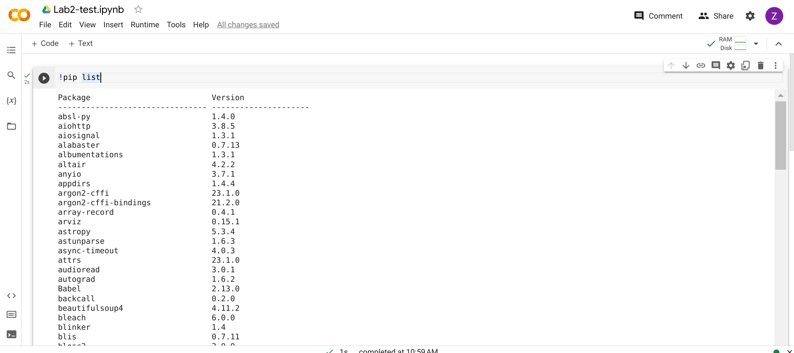
1.2 - How to Remove the Virtual Environment and Create a New One#
If packages are kept preventing from successful installation on your local computer, one of the reasons (in addition to your computer setting, Anaconda, etc.) could be that the setup of your virual environment was messed up. You can try the following command to remove it.
conda remove --name gir --all
And then create the virual environment again with the commands shown in Lab 1.
From here you can install the packages that you need.
For instance, we can install GeoPandas, which will be used in this session.
To do so, you can execute the following command…
!pip install geopandas
… and then run the code below to check whether the installation is successful.
import geopandas
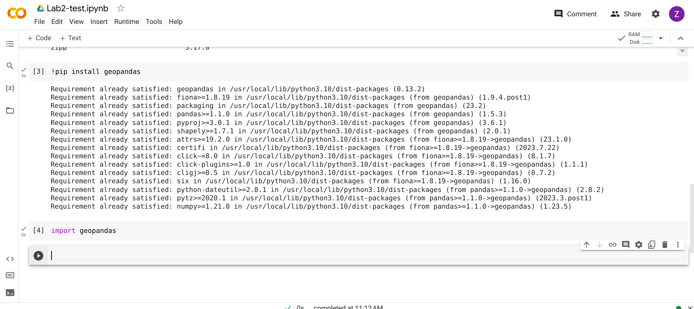
1.3 - JupyterHub#
Now we have a brand new solution which frees us from installing the virtual programming environment locally or using Google Colab. The solution is JupyterHub, set up by our IT. You can access it on our course Moodle webpage. 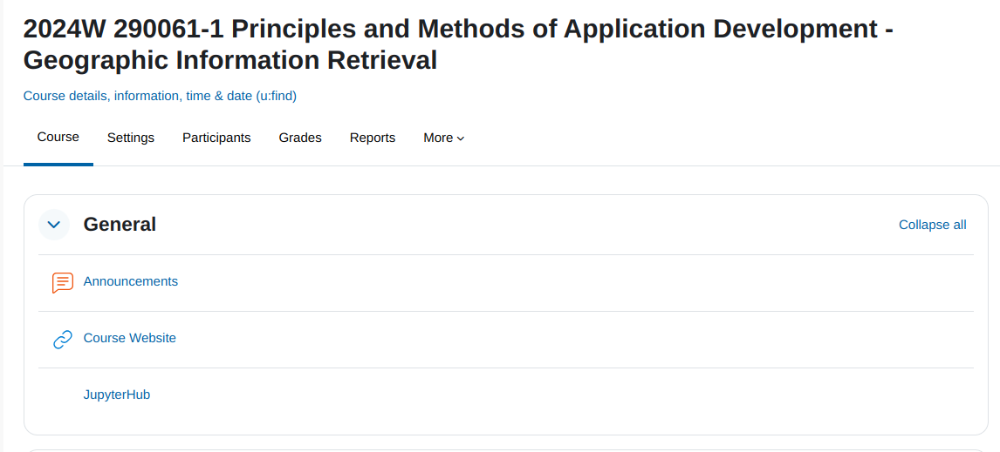
When you enter JupyterHub, click Start My Server. 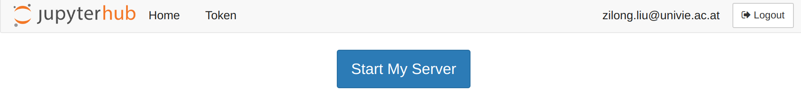
After that, select IT_Geo. 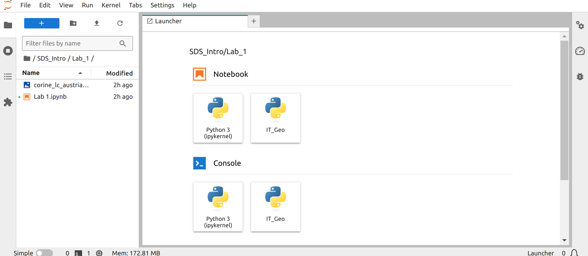
You are ready to go! And start from this lab session, let us use JupyterHub.
2 - GeoPandas for Spatial Data#
GeoPandas is designed to process spatial data in Python. Geopandas combines the capabilities of the data analysis library Pandas with other packages like shapely and fiona for managing spatial data.
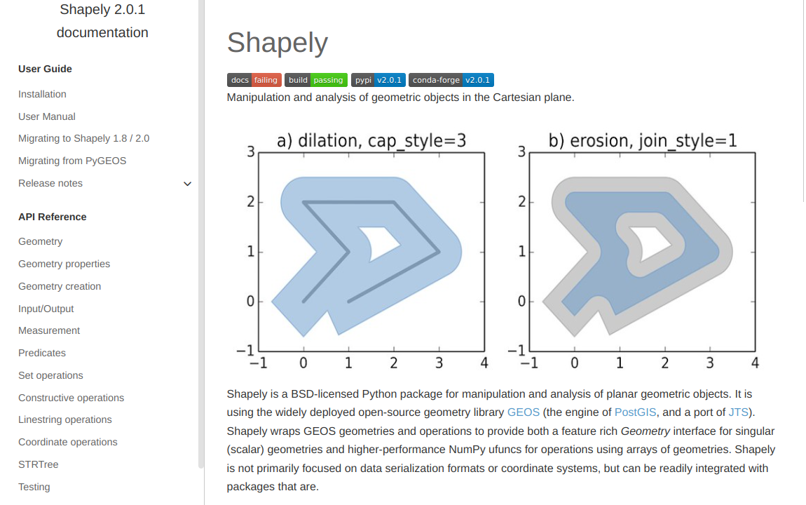 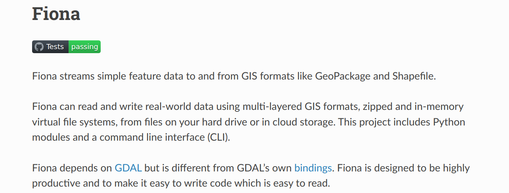
GeoPandas can manipulate geometries, read and write files in GIS formats, inherit powerful functionalities from Pandas… Generally speaking, it allows us to perform geospatial processing in a spatial-database manner.
2.1 - GeoPandas v.s. Pandas (for Non-spatial Data)#
The two key components in Pandas are Series and DataFrame. A Series is essentially a column, and a DataFrame is a multi-dimensional table made up of a collection of Series.

Similarly, the main data structures in GeoPandas are GeoSeries and GeoDataFrame. They extend the capabilities of Series and DataFrame, respectively.
The key difference between GeoDataFrame and DataFrame is that a GeoDataFrame should contain at least one column for geometries. By default, the name of this column is geometry. The geometry column is a GeoSeries that contains the geometries (points, lines, polygons, multipolygons, etc.) as shapely objects.
[Hint: In our course, we will focus on learning to use GeoPandas. The takeaway can easily transfer to Pandas.]
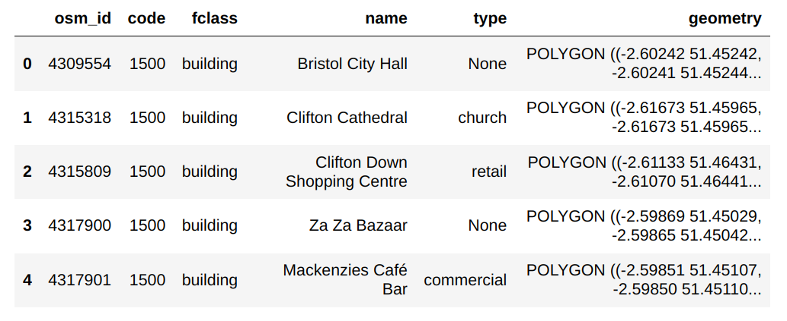
3 - Working with Natural Earth Vector Data#
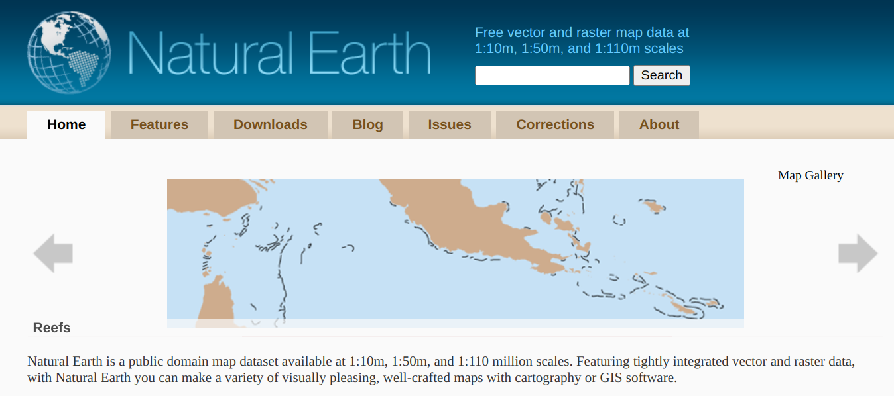
3.1 - Data Download#
Go to the Downloads tab and click on the Cultural category of Large scale data, 1:10m. Then, download vector data (the one with 4.7 MB) for Admin 0 - countries. Extract the zip file to the same directory of the Jupyter notebook.
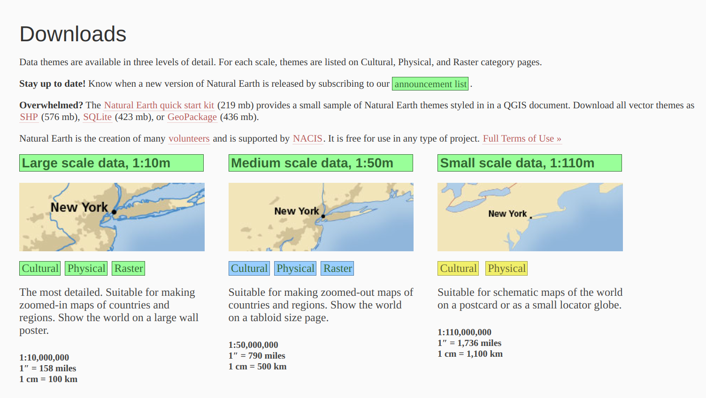 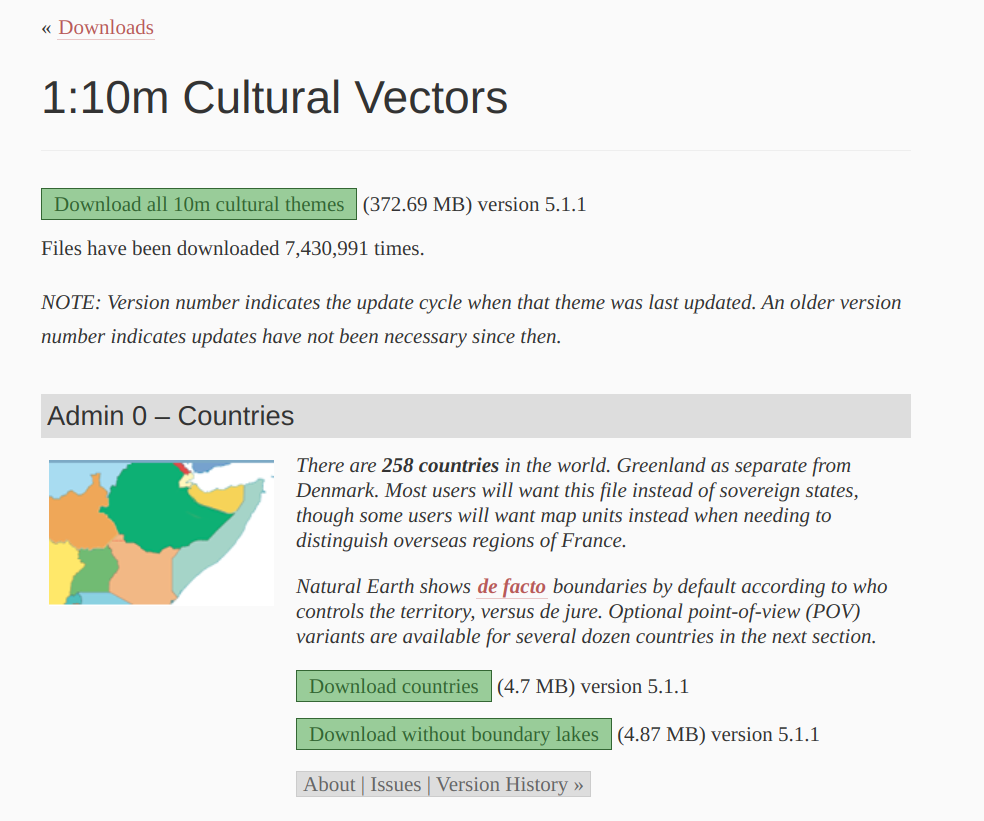
3.2 - Load Data#
import geopandas as gpd ## use the abbreviation of an imported package (if necessary)
df_countries = gpd.read_file('ne_10m_admin_0_countries/ne_10m_admin_0_countries.shp') ## read shapefile
## show the first several records
## the default number is 5
## try to comment this line of code, and uncomment one of the rest and run the cell again
df_countries.head()
# df_countries.head(1) ## try to uncomment and output the first record
# df_countries.tail() ## try to uncomment and output the last five records
3.3 - Statistical Analysis#
## This method prints information about a GeoDataFrame.
df_countries.info()
df_countries.describe() ## descriptive statistics
However, how many columns (i.e., fields) do we have in the GeoDataFrame?
df_countries.columns
len(df_countries.columns)
The answer is 169. Only, numerical fields can be involved in the descriptive statistical analysis.
3.4 - Querying over GeoDataFrame#
## make sure to use the double equal sign
df_countries_austria = df_countries[df_countries['SOVEREIGNT'] == 'Austria']
df_countries_austria
If we want to know more about Austria, we can choose one of the fields the GeoDataFrame has.
Here we will choose ‘LEVEL’. The result indicates that Austria’s ‘LEVEL’ is 2.
df_countries_austria['LEVEL']
## Alternatively, you can try...
# df_countries_austria.LEVEL
Is there any countries that have a ‘LEVEL’ not equal to 2?
df_countries[df_countries['LEVEL'] != 2] ## != means 'not equal to'
It looks like there are two countries, Kazakhastan and Cuba, that meet this search criteria.
3.5 - Coordinate System Transformation#
What kind of coordinate system does the country data use?
df_countries.crs
It is a geographic coordinate system WGS 84, represented as EPSG:4326 by EPSG. EPSG is a open-source web service with a database consisting of all widely-used coordinate reference systems with unique Uniform Resource Locators (URLs) on the web.
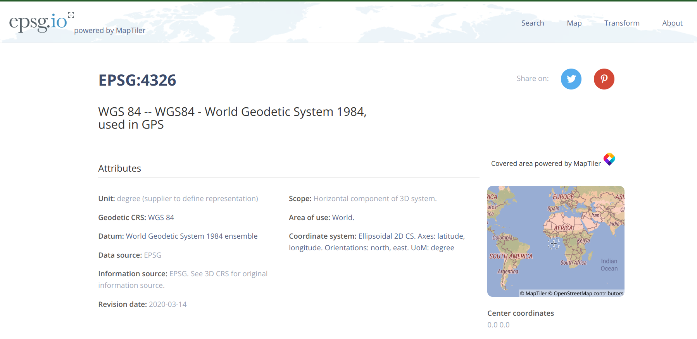
Assume now we want to compute distances among European countries. Therefore, a projected coordinate system that preserve distance is required. Here we choose a system that uses the equidistant conic projection, which is ESRI:102031.
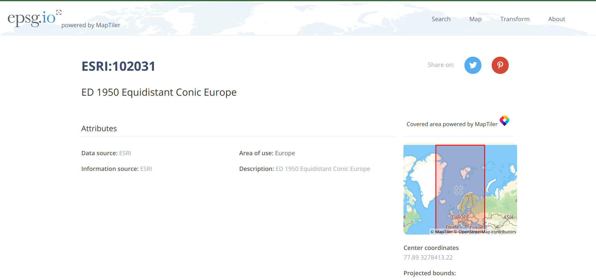
## use to_crs to do coordinate system transformation
df_countries_projected = df_countries.to_crs('ESRI:102031')
Check the difference in how geometries are represented.
## geometries represented in a geographic coordinate system
df_countries.geometry
## geometries represented in a projected coordinate system
df_countries_projected.geometry
Again, you can browse information about ESRI:102031, e.g., Area of Use, Datum (different from WGS 84), etc.
df_countries_projected.crs
3.6 - Distance Computation#
Now we would like to compute the distance between Austria and Italy based on their centroids. We will extract their planar coordinates first, and then compute Eucliean distances.
## get centroids respectively
centroid_aut_planar = df_countries_projected[df_countries_projected['SOVEREIGNT'] == 'Austria'].centroid.iloc[0]
centroid_ita_planar = df_countries_projected[df_countries_projected['SOVEREIGNT'] == 'Italy'].centroid.iloc[0]
## get x and y coordinates respectively
x1_planar = centroid_aut_planar.x
x2_planar = centroid_ita_planar.x
y1_planar = centroid_aut_planar.y
y2_planar = centroid_ita_planar.y
# import math to help compute the square and square root
import math
math.sqrt(math.pow(x1_planar-x2_planar, 2) + math.pow(y1_planar-y2_planar, 2))
The distance is approximately 564 kilomters.
4 - Submission#
For the participation grade, try the codes above and compute the great-circle distance using the Haversine Formula. Observe the difference in how distances can be. It is also natural that warning messages may pop up because it is not a standard practice of computing centroids within a geographic coordinate system. You are welcome to switch Austria-Italy to any other pairs of countries for comparison.
## getting latitudes and longitudes
# you don't need a separate line here, this is just to show everthing in pdf
centroid_1 = df_countries[df_countries['SOVEREIGNT']
== 'Austria'].centroid.iloc[0]
centroid_2 = df_countries[df_countries['SOVEREIGNT']
== 'Italy'].centroid.iloc[0]
x1 = centroid_1.x #longitude
x2 = centroid_2.x
y1 = centroid_1.y #latitude
y2 = centroid_2.y
from math import radians, sin, cos, asin, sqrt
def haversine(lon1, lat1, lon2, lat2):
lon1, lat1, lon2, lat2 = map(radians, [lon1, lat1, lon2, lat2])
dlon = lon2 - lon1
dlat = lat2 - lat1
a = sin(dlat/2)**2 + cos(lat1) * cos(lat2) * sin(dlon/2)**2
return 2 * 6371 * asin(sqrt(a))
# note that x is longitude, y is latitude here
haversine(x1, y1, x2, y2)